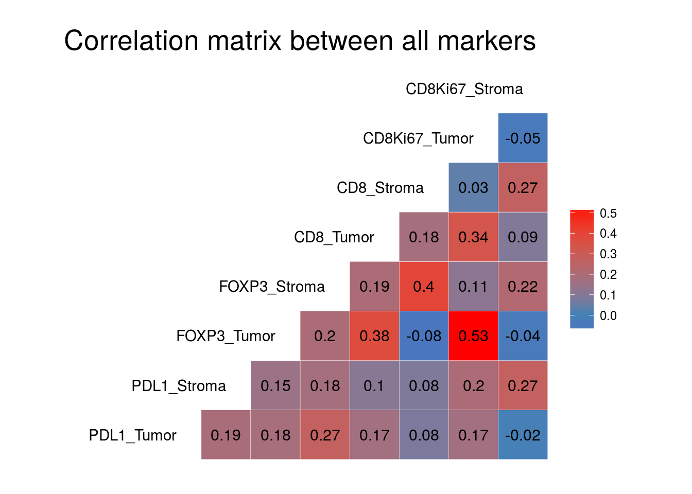
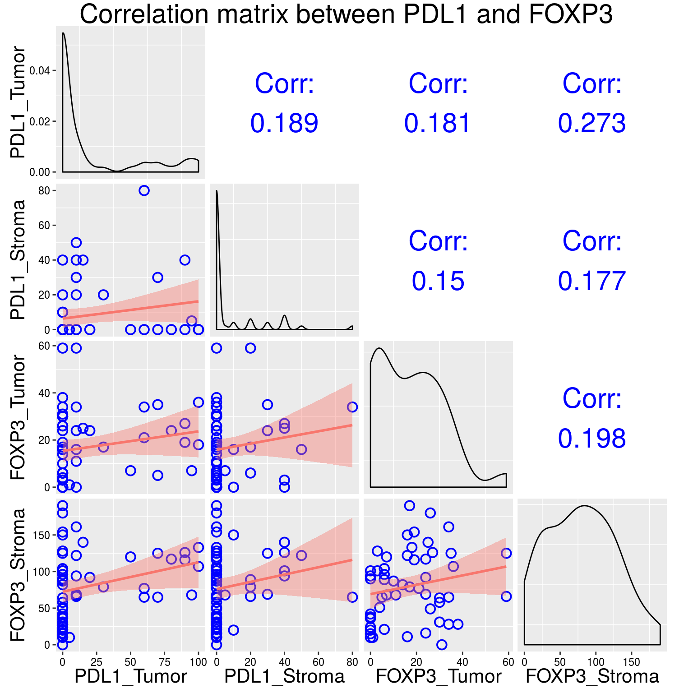
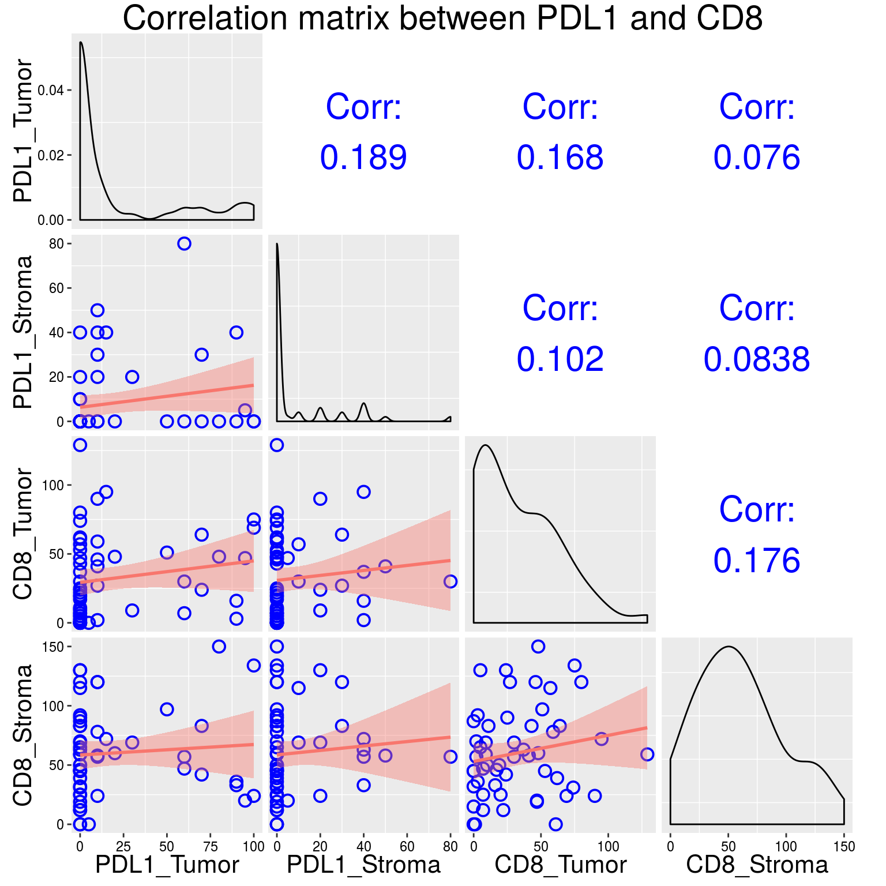
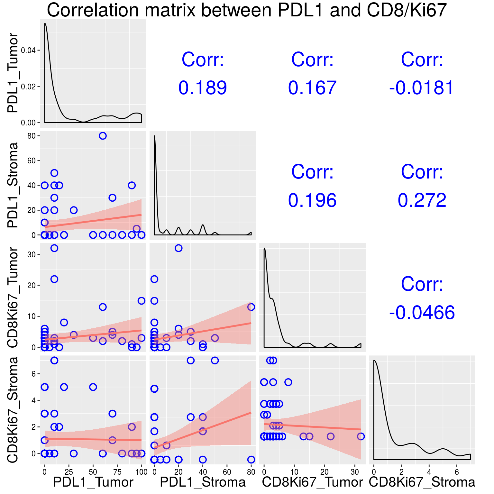
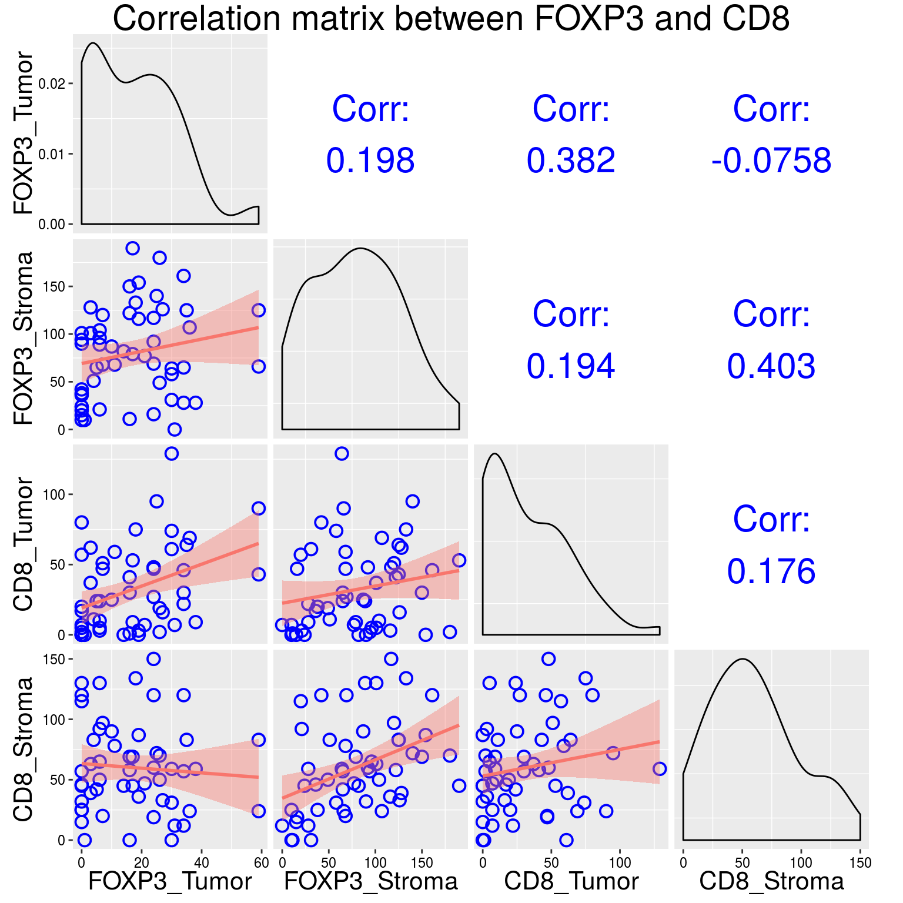
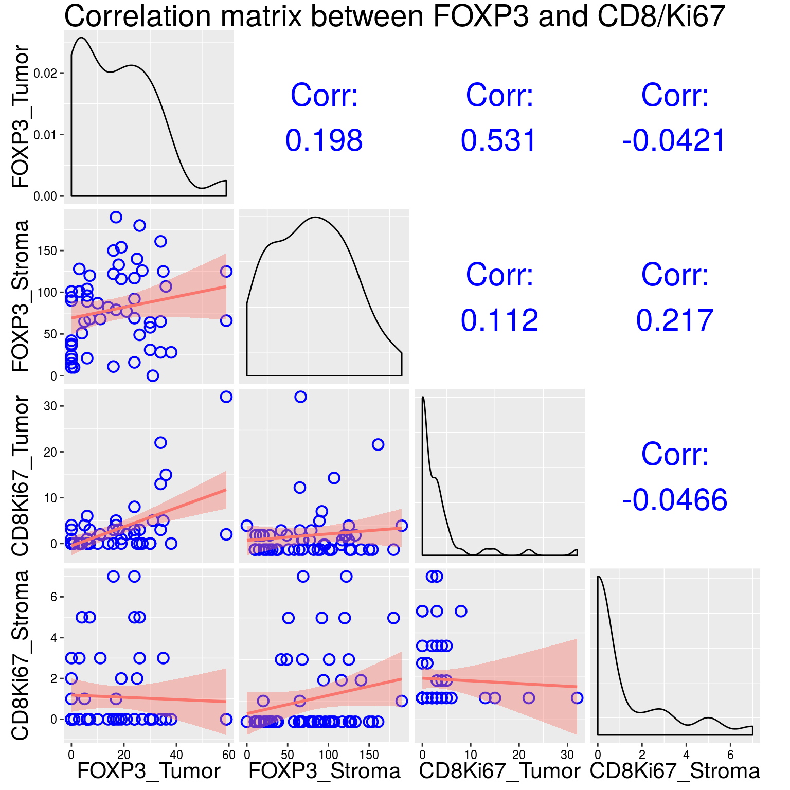
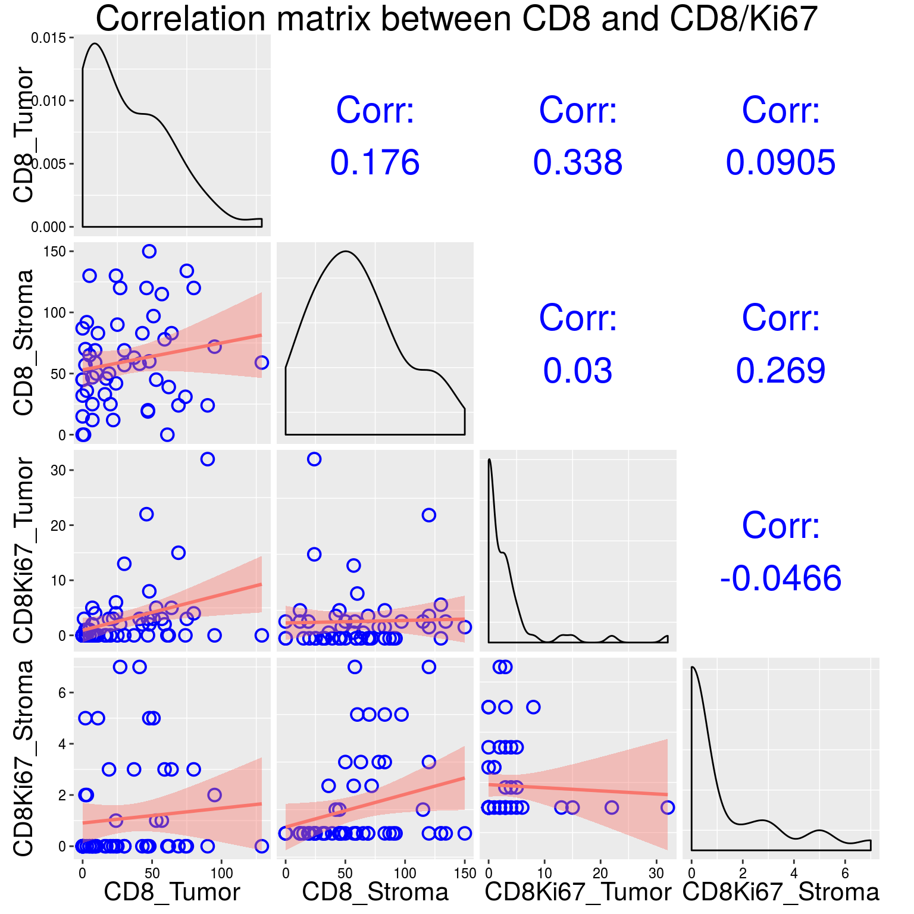

# Setting up global options
library(knitr)
opts_chunk$set(
warning = FALSE,
message = FALSE,
fig.align = "center"
)
# Loading the dataset
load("../Data/PFCK_penile.Rdata")
source("../R/gplots.R")
source("../R/co.R")
# Defining the predictor variable and label
pred <- DATA$cd8_foxp3_stroma
pred_label <- "CD8-to-FOXP3 balance in stromal lymphocytes"library(GGally)
# Selecting columns for correlation matrix
DATA_cor <- DATA %>%
select(pdl1_tumor_max:cd8_ki67_stroma_max) %>%
rename(
PDL1_Tumor = pdl1_tumor_max,
PDL1_Stroma = pdl1_stroma_max,
FOXP3_Tumor = foxp3_lymph_tumor_max,
FOXP3_Stroma = foxp3_lymph_stroma_max,
CD8_Tumor = cd8_tumor_max,
CD8_Stroma = cd8_stroma_max,
CD8Ki67_Tumor = cd8_ki67_tumor_max,
CD8Ki67_Stroma = cd8_ki67_stroma_max
)
ggcorr(DATA_cor, label = TRUE, hjust = 1, layout.exp = 2, label_round = 2,
limits = FALSE,
low = "blue", mid = "steelblue", high = "red") +
ggtitle("Correlation matrix between all markers") +
gtheme
# Specifying biomarker columns
pdl1_col <- c(1, 2)
foxp3_col <- c(3, 4)
cd8_col <- c(5, 6)
cd8ki67_col <- c(7, 8)
# PDL1 and FOXP3
title <- "Correlation matrix between PDL1 and FOXP3"
cor_pairs(DATA_cor, columns = c(pdl1_col, foxp3_col), title = title)
# PDL1 and CD8
title <- "Correlation matrix between PDL1 and CD8"
cor_pairs(DATA_cor, columns = c(pdl1_col, cd8_col), title = title)
# PDL1 and CD8/Ki67
title <- "Correlation matrix between PDL1 and CD8/Ki67"
cor_pairs(DATA_cor, columns = c(pdl1_col, cd8ki67_col), title = title)
# FOXP3 and CD8
title <- "Correlation matrix between FOXP3 and CD8"
cor_pairs(DATA_cor, columns = c(foxp3_col, cd8_col), title = title)
# FOXP3 and CD8/Ki67
title <- "Correlation matrix between FOXP3 and CD8/Ki67"
cor_pairs(DATA_cor, columns = c(foxp3_col, cd8ki67_col), title = title)
# CD8 and CD8/Ki67
title <- "Correlation matrix between CD8 and CD8/Ki67"
cor_pairs(DATA_cor, columns = c(cd8_col, cd8ki67_col), title = title)